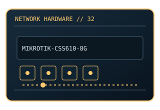

[ MODEL-SPECIFIC NETWORK HARDWARE ]
MikroTik CSS610-8G-2S+IN Cloud Smart Switch
Eight Gigabit copper ports and two 10Gb SFP+ cages in a compact switch. This entry uses the labeled manufacturer model identifier and cites primary product/support documentation.

MODEL IDENTIFICATION: Match the complete model/part number and hardware revision on the item label to manufacturer documentation. Do not apply this entry to near-name variants.
Exact specifications and compatibility
| Cataloged model | MikroTik CSS610-8G-2S+IN Cloud Smart Switch |
|---|---|
| Dedicated subcategory | Unmanaged switches |
| Bus / host interface | Standalone switch; external DC supply; RouterOS SwitchOS family. |
| Ports / physical interfaces | 8 × Gigabit RJ-45 (Ethernet 1 supports PoE-in), 2 × SFP+; no PoE output. |
| PHY, radio or protocol | Ethernet switch with SwOS Lite management; SFP+ uplinks accept supported optical/DAC modules. |
| PoE | Passive PoE-in is supported on Ethernet port 1 (12–57 V); no PoE output. Verify the supply against MikroTik product documentation. |
| Link-rate vs throughput | 1Gb/s access and up to 10Gb/s SFP+ link rate; not a throughput test. Link rates are nominal negotiated/PHY specifications, not measured application throughput; no measured specimen result is claimed. |
| Firmware / driver support | SwOS Lite firmware; configuration features and update path are MikroTik device-specific. |
| Compatibility checks | Use supported SFP+ modules/cables and correct power input; confirm CSS610 vs CRS model. |
Model-specific notes
Use the exact model name; CSS SwitchOS Lite differs from RouterOS products.
Primary manufacturer sources
- MikroTik CSS610-8G-2S+IN product documentationManufacturer product specification or documentation for the exact model/family.
- Manufacturer support and compatibility resourcesFirmware, driver, compatibility, revision or support details; applicability may depend on the exact hardware revision and region.
Vendor maximum rates are not test results. Confirm regional variants, hardware revision and current support status with the manufacturer.